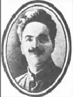

БУДЯК (ПОКОС) Юрій Якович
(1879-1943) Народився в с. Красногірка Костянтиноградського повіту Полтавської губернії. Молодим офіцером російської армії добровольцем брав участь в англо-бурзькій війні 1899-1901 рр. на боці бурів. Врятував життя від розтерзання бурами полоненого молодого англійського військового журналіста Уінстона Черчілля. Пізніше сам потрапив у полон до англійців і разом з У. Черчіллем поїхав до Великобританії, де навчався (за рахунок батьків Черчілля) в одному з англійських університетів, зробив подорож до Сполучених Штатів Америки.
Повернувшись на батьківщину, Юрій Якович перейшов на цивільну службу і займався літературною діяльністю. Працюючи педагогом, написав історичні поеми: "Невольниця-українка" і "Пан Базалей", "Записки вчителя". Він автор ряду повістей, п'єс, оповідань, в яких відобразив життя України. Належав до літературної організації "Плуг". Писав вірші й оповідання для дітей. Після 1917 року Ю. Я. Будяк оселився в Києві, тривалий час працював учителем української мови. Помер Юрій Якович 23 вересня 1943 року в Києві.